Как просчитать электроснабжение в квартире на примере для плиты.
Здравствуйте, я предоставляю услуги электрика в Киеве. Спроектируем линию электроснабжения электроплиты. (Статья полностью моя от а до я. Буду рад, если Вы используете её, указывая ссылку на меня, автора). Как пример, электрическая плита Hansa FCCW58204.
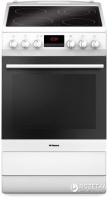Её максимальная мощность, при одновременном включении и конфорок стеклокерамической поверхности, и электрической духовки, составит: верхний нагревательный элемент духовки 900 Вт, плюс нижний нагревательный элемент духовки 1300 Вт, плюс конфорки 2 х HiLight 14.5 см/1.2 кВт, плюс HiLight 18 см/1.8 кВт, плюс двойная HiLight 12/18 см / 0.7/1.7 кВт, равно 8,7 кВт (8,7 киловатт равны 8700 ватт), как и указано в ссылках:
Электроплита в интернет-магазине Инструкция к электроплитеНиже – наглядно о единицах измерения, чтоб освежить в памяти.
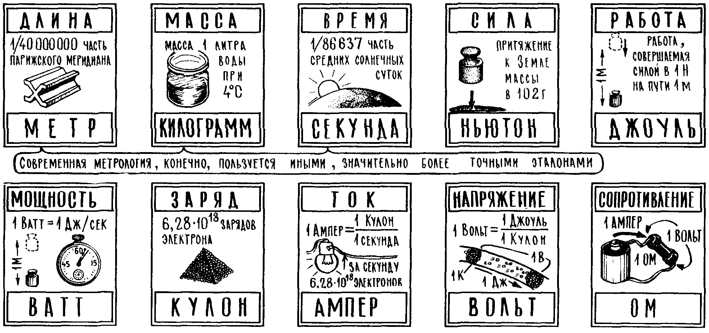Вторая ссылка была - инструкция: производитель в ней даже даёт схему подключения и рекомендует тип кабеля:
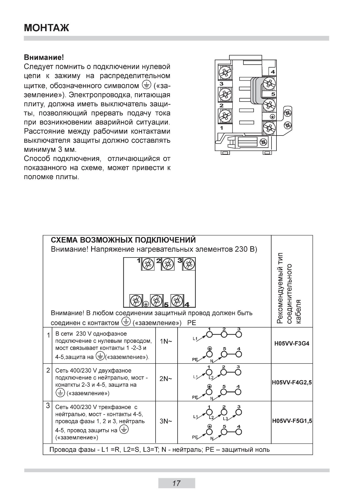На рисунке выше Вы видите так называемую клеммную колодку - панельку подключения на задней стороне электроплиты, к которой подводят, т.е. на которой подключают нашу плиту (в этом случае и поверхность, и духовку разом), которую мы рассматриваем, питающим проводом от электрощита. Панель подключения – это 6 винтов, это 6 точек, которые нужно соединять и с определёнными жилами питающего провода, как показано, и друг с другом прилагающимися медными переходниками-мостками, как указано, в зависимости от того, какая питающая плиту линия подводится: трёхфазная или однофазная. Если к плите к месту установки плиты подводить трёхфазную линию на 5 жил на 380 вольт, плиту запитают от такого провода одним способом, как показано выше на рисунке, а если к плите подводить однофазную линию на 3 жилы на 220 вольт (эту модель можно подключать и на 220, и на 380 вольт), плиту подключат от такого провода уже другим способом, как указано в инструкции выше. Ниже – специальная отвёртка, называемая индикатор фазного напряжения, которой дотрагиваются до оголённых проводов, и узнают, какая жила в проводе фаза, а какая - ноль. Когда такую отвёртку человек зажимает между указательным и средним пальцем, а большим касается как указано на картинке, а другим концом отвёртки дотрагивается до провода, то если он дотронется до фазной жилы в проводе, в отвёртке загорится неоновая лампочка, а касаясь нулевой жилы или заземляющей – не должна загораться.
 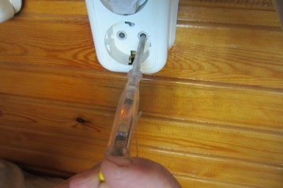
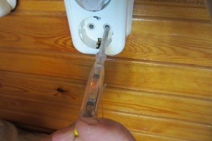
Однофазное присоединение на 220 вольт означает, что разность потенциалов между фазой (одним фазным проводником) и нулевым проводником (рабочим нулём) составит 220 вольт, т.е. фаза в присоединении одна (в трёхжильном кабеле на 220 вольт нормально должна быть одна жила - фаза, одна жила - рабочий ноль и одна жила - защитный ноль или земля), в то время, как трёхфазное присоединение на 380 вольт означает, что фаз, фазных присоединений, находящихся под фазным напряжением три штуки (в пятижильном кабеле на 380 вольт нормально должны быть три разные фазы, один рабочий ноль и одна земля),
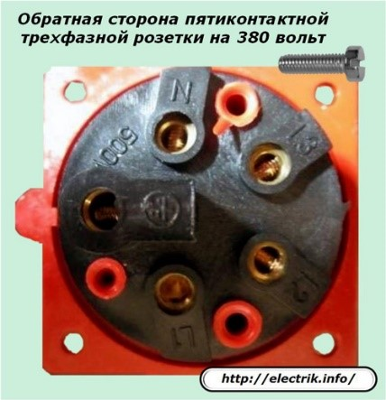и разность потенциалов между любыми двумя из трёх фазными присоединениями составит 380 вольт, хотя в то же время разность потенциалов между одним из трёх фазных присоединений и рабочим нулём, или например, с заземлением, называемым ещё защитным нулём, составит конечно, также, 220 вольт. В этом легко убедиться, замерив всё вышесказанное с помощью простенького мультиметра за 100 грн (см. ниже). На картинке видим, как мультиметром измеряют напряжение между фазой и нулём в удлинителе, вставив один щуп мультиметра в одно отверстие розетки, а второй щуп – в другое.
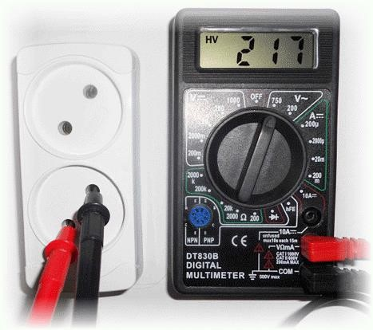Ниже – замер напряжения мультиметром между каждой из трёх фаз трёзфазного автомата и нулём.
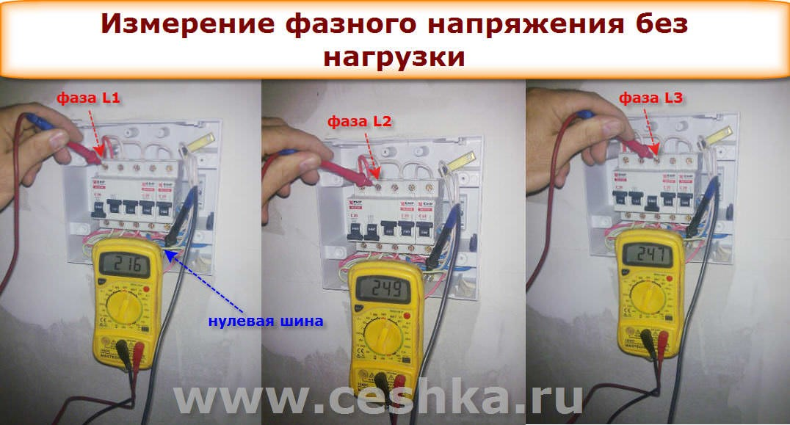 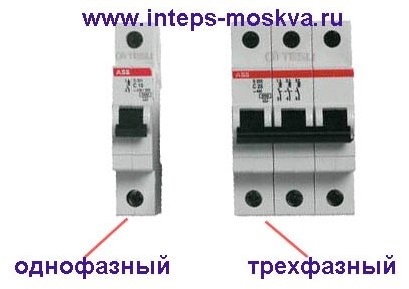Вы видели на фото, что чётко 220 вольт далеко не всегда можно у себя замерить. Сегодня отклонения в напряжении электросетей регулируются ГОСТ 13109-97 “Электрическая энергия. Совместимость технических средств электромагнитная. Нормы качества электрической энергии в системах электроснабжения общего назначения”.
Нормы качества электрической энергииПо нему (обязательное приложение Б, пункт Б.1.4), если мы измеряем напряжение в квартире каждую минуту в течении 24 часов, и не менее 95% времени от этих 24 часов непрекращающихся замеров напряжение будет в пределах от 209 до 231 вольта, и не более 5% времени от 24 часов (т.е. не более 1ч 12 мин за 24 часа), напряжение будет в пределах от 198 до 242 вольта, и 0% времени от 24 часов напряжение будет или меньше 198 вольт или больше 242 вольт, то качество электроэнергии считается соответствующим требованиям национального стандарта.
Анализ нормативаВыполняя заказы в Киеве, могу сказать, что в новых домах напряжение соответствует национальному стандарту, а в старом жилом фонде – нет. Сам свидетель таких причин несоответствия стандарту, как изношенность систем электроснабжения от щитовых на весь подъезд и до розетки пользователя, несоответствие этих систем возросшим нагрузкам, отвратительное обслуживание этих систем. Рекомендую в этих случаях использовать как минимум реле напряжения
Реле напряжения в интернет-магазине 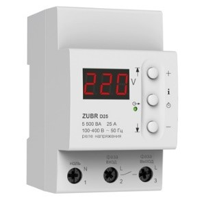Реле напряжения выбирают по току, прописанному в паспорте и на передней панели изделия. Как считать ток - об этом далее. По-простому, он должен соответствовать главному вводному автомату перед электросчётчиком квартиры, а вникая в детали - I = P/(Ucosf). К примеру, Вы думаете нагружать проводку Вашей квартиры стиральной машиной, одной конфоркой электроплиты, компьютером и бойлером (таблица с мощностями и cosf разных приборов - ниже). Средняя потребляемая мощность приборов: Телевизор 60 ватт, Моноблок 80, Проигрыватель DVD 40, Видеомагнитофон 40, Видеоплеер 40, Видеокамера 11, Акустическая система до 100, Караоке 50, Буфер до 150, Ресивер до 1000, Система ДК 100, Музыкальный центр 50, Тюнер 10, Усилитель 400, Аудиомагнитофон 40, Электрогазовая плита до 4000, Электрическая плита до 10000, Морозильная камера 200, Холодильник до 200, Посудомоечная машина 2000, Стиральная машина 2300, Поверхность электрическая до 6000, Поверхность электрогазовая 2000, Духовка 2000, Эл.водонагреватель до 1500, Воздухоочиститель (вытяжка) 300, Конвектор 2000, Тепловентилятор 2000, Электрический радиатор 2500, Электрический камин 2500, Кондиционер до 1500, Вентилятор 100, Вафельница 2000, Кофеварка до 2000, Кофеварка-эспрессо до 2000, Кофемолка 180, Сендвичница 2000, Тостер 2000, Эл.чайник 2000, Фритюрница 1000, Блендер 600, Кухонный комбайн до 1000, Миксер 400, Мясорубка до 1000, Соковыжималка 500, Печь СВЧ 2500, Пылесос до 2000, Сушилка для рук 1500, Утюг 1500, Прибор для укладки волос 500, Фен 1500, Щипцы для завивки 35, Швейная машина 135, Компьютер 135. Коэффициенты мощности отдельных бытовых электроприёмников: Лампы накаливания 1,0, Люминесцентные лампы 0,92, Холодильники 0,65, Насосы,вентиляторы, кондиционеры до 4 кВт: 0,75, То же, при мощности двигателя свыше 4 кВт: 0,85, Телерадиоаппаратура 0,65, Водонагреватели, электроотопители: 1,0, Сауны 1,0, Джакузи 0,8, Персональные компьютеры 0,65. В среднем это где - то будет 5,5 кВт. I = P/(Ucosf) = 5500/(220х0,88) = 28,4 ампера. Значит реле на 25 ампер для такой нагрузки уже недостаточно. А как максимум, при несоответствии напряжения стандарту, рекомендую использовать для быта: стабилизатор напряжения автотрансформаторный с тиристорной (симисторной) коммутацией отводов от торговых марок “Элекс”, “Донстаб” (автоматически подстраивается к реактивным нагрузкам), “Вольтер”, или электронный стабилизатор с двойным преобразованием для “крутых” нагрузок. Приведу ссылки:
Таблица с ссылками на украинских производителей стабилизаторов напряжения:
Обзор украинских производителей стабилизаторовРуководство по эксплуатации стабилизаторов “Донстаб”, в конце которого интересный перечень возможных проблем у стабилизатора при работе:
Инструкция к стабилизаторуПро типы стабилизаторов и их подбор:
Помощь в подборе стабилизатораТип рекомендуемых для подключения кабелей - европейской маркировки. Маркировка HO5VV-F3G4 для однофазного присоединения означает:
Расшифровка маркировкиH – безгалогеновый ПВХ, 05 - номинальное напряжение 300/500 В, V - ПВХ изоляция. F - Гибкий многопроволочный (кабели силовые), цифра после F – количество жил в кабеле, цифра после G - рекомендуемое сечение кабеля: если G4 для однофазного присоединения, то это означает, что рекомендуют кабель, каждая из трёх жил которого составляет 4 квадратных милиметра, если G1,5 для трёхфазного присоединения, то рекомендуют кабель, каждая из пяти жил которого на 1,5 квадратных милиметра. Украинский аналог рекомендуемого европейского кабеля, как я и ожидал, ПВСн, см. ниже.
таблица соответствия марок кабеля иностранного и отечественного производстваНиже расшифровка рекомендуемой марки провода ПВС из каталога киевского производителя кабелей “Интеркабель”:
Соединительные провода ПВС (для подключения электроприборов) Силовые кабели ВВГнг (для прокладки электрики в квартирах) 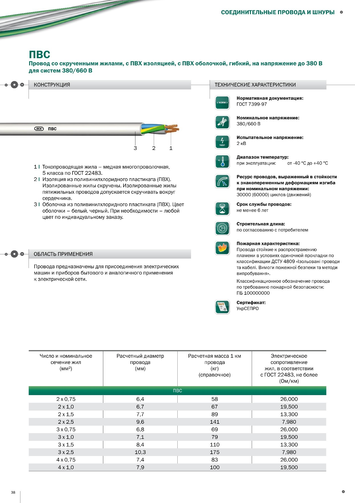Производители кабелей рекомендуют, как видим, провод ПВС для подключения в нашем случае электроплиты, потому что предусмотрено, что он должен быть гибким, валяясь за плитой, не бояться изгибов, изломов, действия грязи на изоляцию, имеется ввиду участок провода от клеммной колодки на задней панели электроплиты до специальной розетки электроплиты в стене. Он лежит открыто, на него могут действовать вышеприведённые факторы, поэтому он, а также такой же провод, но плоский, называется марка ШВВП, не предназначены, чтоб ими разводить проводку под штукатуркой в штробах-канавках по стенам, ведь и производители обещают срок их эксплуатации всего лишь не менее 6 лет, что отвратительно мало для разводки по дому (это мой ключевой аргумент в подобных обсуждениях), ведь они же должны быть сменяемыми, раз ими бытовые приборы подключают к розеткам. Для разводки по всем комнатам следует использовать, как указывает производитель, ВВГнг, специально предназначенный для контакта его изоляции со штукатуркой, и производитель обещает срок его службы уже не менее 6 лет, а не менее 30 лет! (см. ниже рекомендацию)
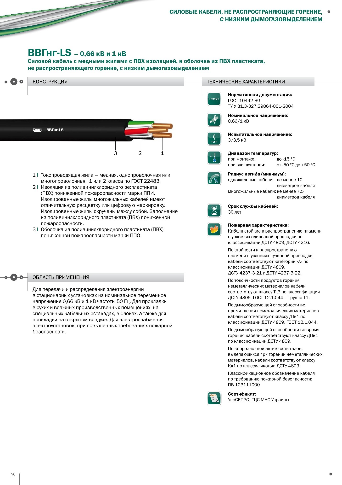От клеммной колодки на задней панели плиты до розетки плиты необходим, как рекомендуется, провод ПВС, а от электрощита, в штробах-бороздах под штукатуркой до розетки плиты необходим провод ВВГнг, чтоб не было ситуации, что через 6 лет провод ПВС, проложенный под штукатуркой от щитка к плите, перестанет исправно работать по истечении 6 лет гарантии от кабельного завода, когда гарантия 30 лет у ВВГнг вместо ПВС под штукатуркой – это совсем другое дело.
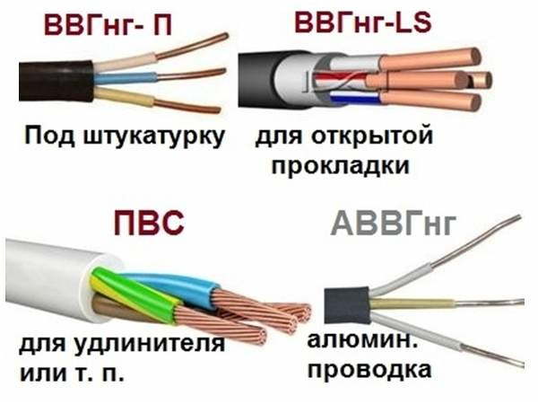Ниже рекомендуемый мной для нашего случая пример комплекта – вилки и розетки для подключения электроплиты от Legrand, с нормально допустимой мощностью подключения 7 кВт и допустимым током для нагрузки в 32 ампера.
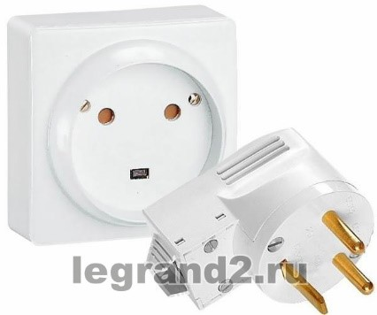Вот через такие надёжные комплекты можно и нужно подключать плиту проводом ПВС, как правило, длиной около 3 метров. Ссылка на вилку с розеткой от Legrand:
Силовая вилка Legrand- это на 220 вольт, так как три штыря на вилке означает, что подсоединяется трёхжильный кабель, в то время как для 380 вольт необходимо 5 штырей на комплекте, как и рекомендует производитель электроплиты: подключать пятижильный кабель в случае подводимого на проводе напряжения в 380 вольт (три фазных жилы, плюс жила рабочего нуля и плюс жила защитного нуля). Я рекомендую использовать электротехнические изделия, которые отвечают требованиям европейских стандартов (это доступная информация). Любой производитель делает свою продукцию по законодательству и стандартам качества, обязательным в его стране, а поскольку не секрет, что реалии украинских электросетей и украинские действующие стандарты (являющиеся взаимосвязанными явлениями), предъявляемые к электротехническим изделиям, сильно отстали от европейских, то ситуация такова: кто хочет эксплуатацию своей электропроводки на “5”, использует электротехнические изделия и подходы, которые отвечают европейским стандартам, а кто не может в силу разных причин, довольствуется остальной продукцией, см. ниже.
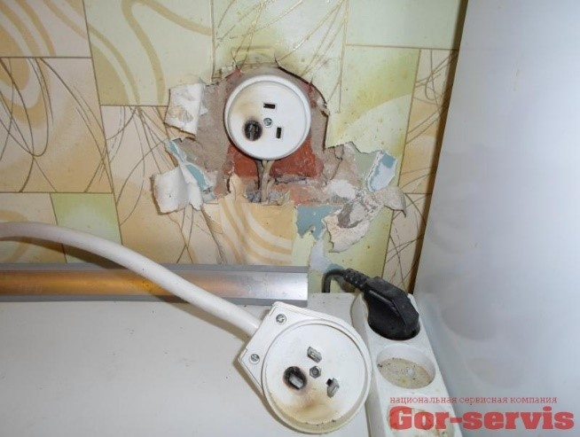Ниже схематично, где удобнее ставить розетки по всей кухне:
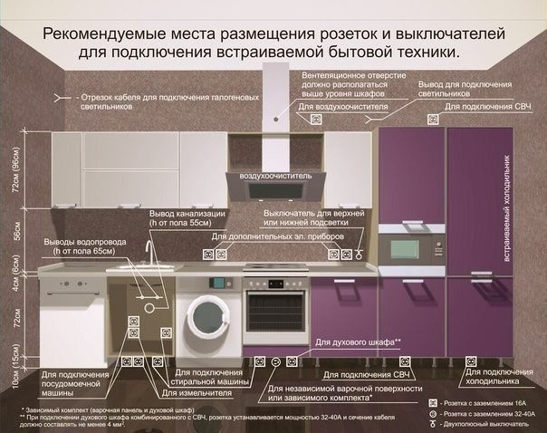Итак, для присоединения на 220 вольт, производитель электроплиты по украинской маркировке рекомендует провод ПВС 3х4 мм2. А для присоединения на 380 вольт – ПВС 5х1,5 мм2. Бесспорно, мы прислушаемся к рекомендациям производителя электроплиты, но давайте узнаем, почему производитель выбрал для этой конкретной модели такие сечения кабелей, ведь, например, модель белорусской электроплиты GEFEST (см. ссылку
Варочная поверхность: стеклокерамическая индукционная.) уже не на 8,2 кВт, как рассматриваемая нами Hansa, а на все 10,3 кВт? Есть главный руководящий документ электрика, называется ПУЭ, правила устройства электроустановок, в нём есть понятная таблица (см. ниже) для медных проводов:
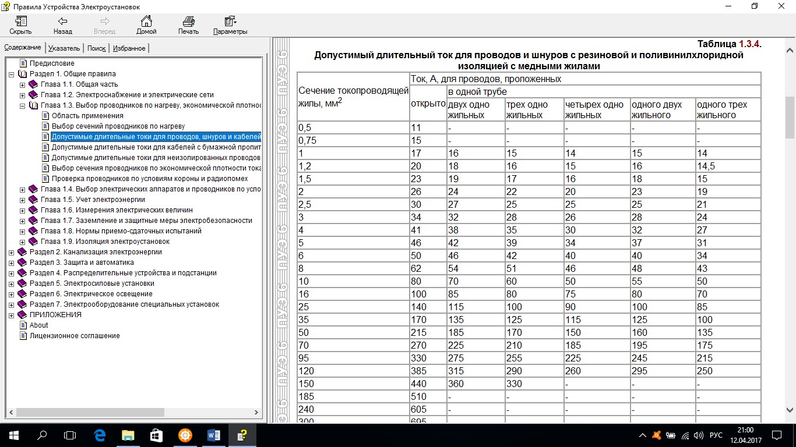Для алюминиевых проводов:
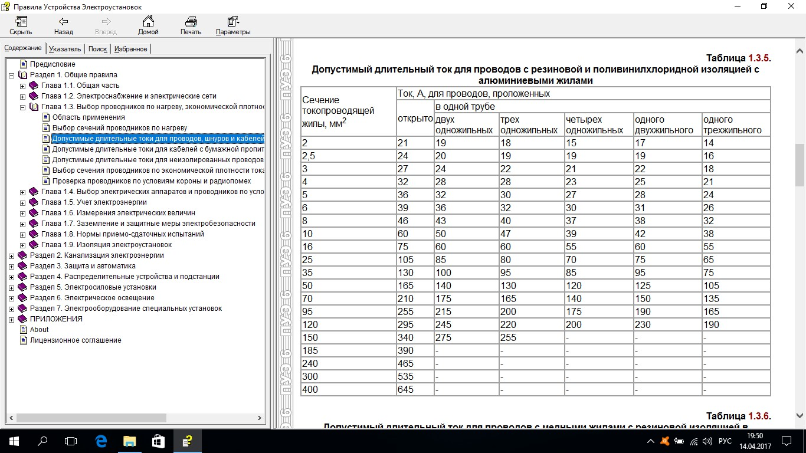Если выбираем провод на присоединение 220 вольт, смотрим на столбик-колонку “одного двухжильного”, поскольку ток будет двигаться по жиле фазного проводника, проходить через электроплиту и возвращаться по жиле рабочего нулевого проводника (его ещё называют просто нулём), т.е. ток будет двигаться по одному двухжильному проводу, хотя провод и будет ПВС 3х4 мм2 на три жилы, но ведь третья жила – это заземляющая жила, по ней ток пройдёт только в случае аварии, чтоб снизить, спустить в землю аварийный потенциал-напряжение, возникшее на корпусе электроплиты. Если будем выбирать провод на присоединение 380 вольт, будем смотреть на колонку “одного трёхжильного”, так как ток будет течь по трём фазным жилам. Смотрим столбец, когда кабель проложен в трубе, так как охлаждение кабеля в штробе примерно такое же, как и в трубе. Также знаем формулу, связывающую мощность, напряжение и ток в одном равенстве: P = UIcosf для 220 вольт и P = √3UIcosf для 380 вольт. Так вот, мы знаем мощность электроплиты, знаем напряжение присоединения, знаем, что cosf такой нагрузки как плита равен единице, так давайте посчитаем, какой ток будет протекать по проводу, если подключить нагрузку – электроплиту. Для 220 вольт: P = UIcosf, P = 8700 ватт всей нагрузки, U = 220 вольт, cosf = 1, I = P/( Ucosf) = 8700/(220х1) = 39,54 ампера. Ищем в нашем столбце ближайшее большее к 39,54 ампер число (это так по правилам, и для спокойствия, что кабель нормально выдерживает такой ток), это 40 ампер напротив сечения 6 мм2. А производитель рекомендовал 4 мм2 потому, что есть такое понятие, как коэффициент использования, равный отношению фактически потребляемой мощности к номинальной (номинальная у плиты - значит полная мощность: вся поверхность с духовкой, а у приборов с двигателями, типа холодильника, кондиционера, стиральной машины, полная мощность для расчётов в полтора раза больше номинальной по паспорту, потому что у них есть ещё и реактивная мощность): Ки = Рфакт./Рном.. Производитель рекомендует сечение 4 мм2, соответствующее нормально допустимому проходящему по такому проводу току 32 ампера (32 ампера – значение тока напротив рекомендуемого сечения 4 мм2). P = UIcosf, I = 32 ампера, U = 220 вольт, cosf = 1. P = 220х32х1 = 7040 ватт = 7,04 кВт. Производитель подразумевает таким образом, что его плита в “боевых условиях”, реально, исходя из опыта, будет задействована не на 8,7 кВт всей мощности, а на 7,04 кВт. Так что если хозяйка будет нагружать плиту не на 8,7 полных киловатта мощности, а на 7,04 киловатта, (смотрим ещё раз, что верхний нагревательный элемент духовки 900 Вт, плюс нижний нагревательный элемент духовки 1300 Вт, плюс конфорки 2 х HiLight 14.5 см/1.2 кВт, плюс HiLight 18 см/1.8 кВт, плюс двойная HiLight 12/18 см / 0.7/1.7 кВт, равно 8,7 кВт), то можно спокойно проводить кабель сечением 4 мм2, ведь он будет дешевле, чем на 6 мм2 для 8,7 кВт, учитывая, что с каждым метром стоимость кабельной линии дороже. Ниже ссылки на коммерческие предложения проводов марок ВВГнг 3х4, ПВС 3х4, ВВГнг 3х6, ПВС 3х6, ВВГ 5х1,5 от киевских дилеров кабельных заводов (на ПВС у них цены оптовые, т.е. если закажете меньше 100 м, цена будет уже выше, в то время как через меня Вы получаете оптовые цены при любой длине в заказе):
Кабель силовой ВВГнг 3х4 ЗЗЦМ Соединительный провод ПВС 3х4 ЗЗЦМНо если думаете плиту на полную включать, подводите кабель для такого конкретного случая на 6 мм2, ведь правильная проводка – это гарантия от пожаров (см. ниже),
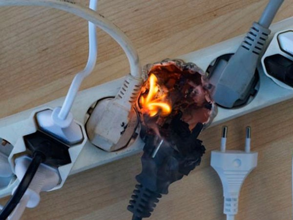от вскрытия стен после ремонта, это долговечная служба провода не менее 30 лет, как мы и видели в гарантиях от производителя провода. Но если у Вас уже есть подведённый к месту установки электроплиты кабель, то следует посчитать ток, который должен нормально выдерживать этот подведённый провод. Для этого используем формулу P = UIcosf для 220 вольт и P = √3UIcosf для 380 вольт. Например, Вы выбрали модель белорусской электроплиты GEFEST на 10,3 кВт. См. ссылку
Варочная поверхность: стеклокерамическая индукционная.и у Вас в квартиру подведено однофазное питание 220 вольт. Считаем ток: I = P/( Ucosf) = 10300/220х1 = 46,82 ампера. Смотрим таблицу по медным проводам, если подведённый кабель из меди:
Ближайшее большее к 46,82 ампера значение - 48 ампер напротив сечения 8 мм2. Но кабель сечением 8 мм2 – это редкая товарная позиция под заказ. Вероятно, её нужно будет заказывать определённой длины, ждать какое – то время, и платить за сложности дороже. А вот 40 ампер из таблицы, с соответствующим сечением 6 мм2 будет равняться нормально допустимой подключаемой к проводу мощности P = UIcosf для 220 вольт, P = 220х40х1 = 8800 ватт. Поэтому, зная из паспорта плиты, какие её нагревательные элементы какой мощности соответствуют, можно нагружать плиту не до всех 10300 ватт, а до 8800 ватт, подведя к ней кабель сечением 6 мм2. Или, если Вы думаете нагружать её на все 10300 ватт, вести кабель 8-10 мм2. Допустим, Вы думаете нагружать её не на все 10300 ватт за раз, а не более 8800 ватт сразу. Вы смотрите на уже подведённый к плите кабель и хотите убедиться, что он сечения 6 мм2, что каждая его жила 6 мм2. Вы берёте штангенциркуль,
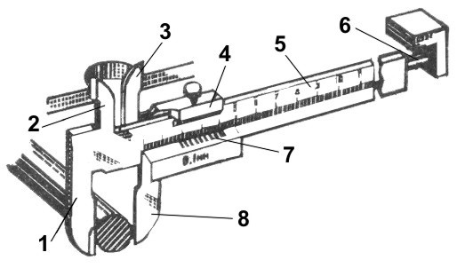 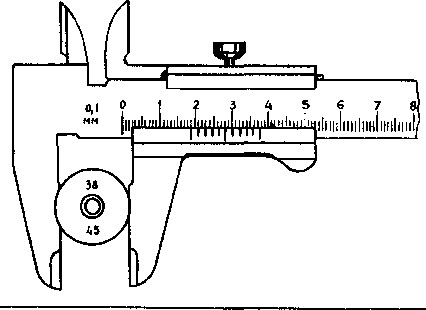 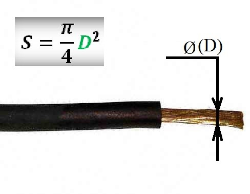 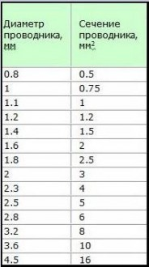и замеряете диаметр D голой жилы без изоляции, отключив заранее этот провод на щитке. По формуле на рисунке высчитываете, в случае 6 мм2: S = πD2/4 = 3.14х2,82/4 = 6,1544 мм2. Видим, что действительно это сечение 6 мм2. Поэтому я рекомендую кабели завода ЗЗЦМ,
«Запорожский завод цветных металлов» — одно из крупнейших предприятий Украины.без усечённых жил кабелей, из меди без примесей, и с отличной изоляцией. Разные сечения кабеля марки ПВ-3 (справа от марки - сечение) для наглядности:
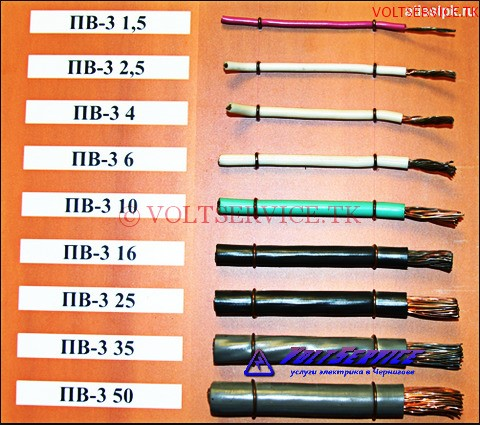Замерив таким способом ещё и вводной кабель, который идёт от электросчётчика на Вашу квартиру (тоже не забывая заранее его для этого обесточить), Вы, посчитав (как – см. выше) его сечение, по таблице выше посмотрите (пример - выше), какой ток он нормально выдерживает, и по формуле посчитаете (см. пример расчёта выше), какая мощность выделена на Вашу квартиру. Ниже – моя таблица, где я подсчитал, как соотносятся друг с другом номиналы автоматов, сечения кабелей и позволенные мощности(сайт в левом углу - мой бывший):
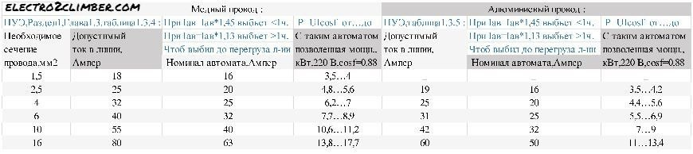По правилам использования электрической энергии,
Правила взаимоотношений между поставщиками и потребителямипо которым регулируются взаимоотношения тех, кто принимает электроэнергию, и тех, кто передаёт, есть граница разграничения принадлежности и эксплуатационной ответственности в электросетях между первыми и вторыми, которая для жильцов квартир многоквартирных домов установлена на отходящих в квартиру клеммах квартирного электросчётчика.
Электрик Киев. Все виды работ. (097) 833 40 32